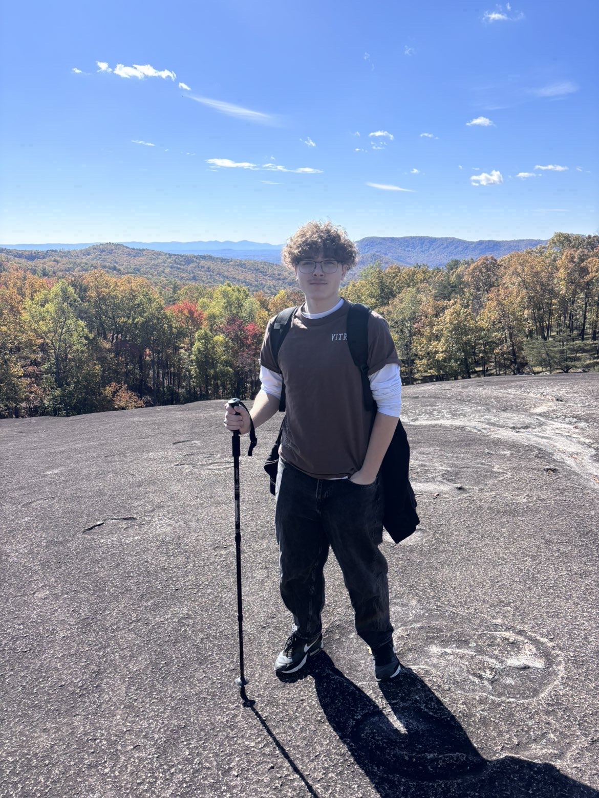

Introduction
Ethan Roe | Ethereal Raven

- Personal Background: I'm from New York. I enjoy messing with my computer, the outdoors, playing games, and hanging with my friends.
- Professional Background: I've worked multiple jobs, examples being a waiter, a cook, a retail associate, and I've also worked at a gas station and a liquor store.
- Academic Background: I am a cybersecurity major at UNC Charlotte.
- Primary Work Computer: MacBook running macOS.
- Primary Work Location: Charlotte, North Carolina.
- Alternate Computer: Windows desktop computer.
-
Courses I’m Taking:
- Database Design: To understand the fundamentals of database design.
- Front End Web Development: To learn more about front-end development.
- Human Centered Computing: Required for my major.
- Computing and AI: Required for my major.
- Matrices and Linear Algebra: Required for my major.
- Funny/Interesting Fact: I enjoy skiing.
“The best way to learn technology is to keep building with it.”
– Ethan Roe